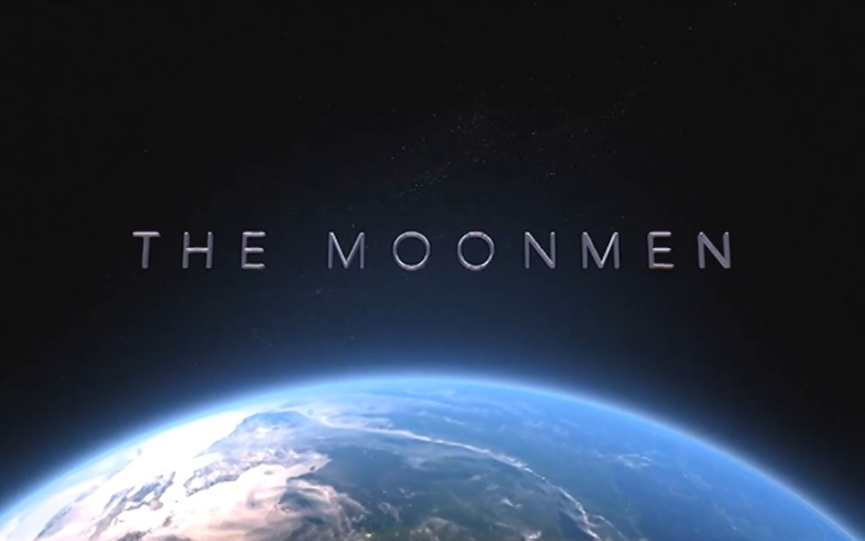
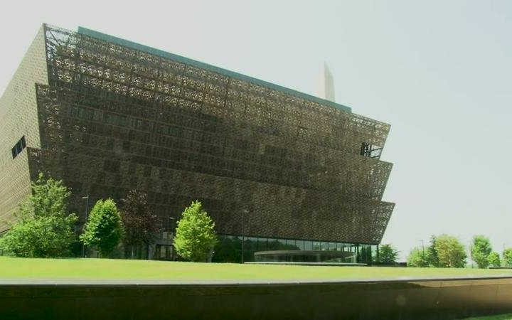
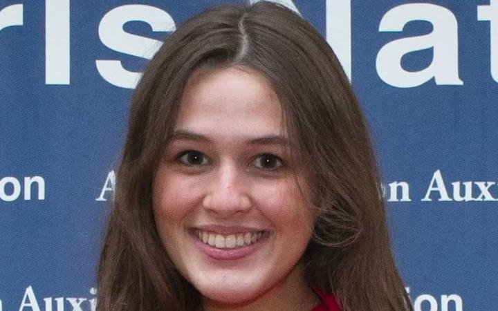
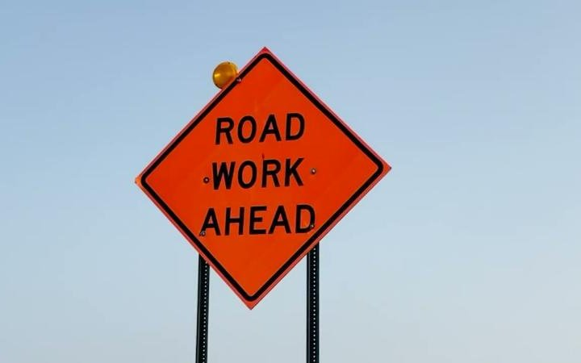
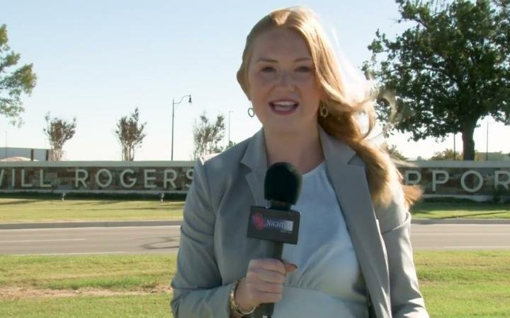

Race to Refuge
A choose-your-path simulation of the U.S. refugee entry process. Players take the role of an applicant and choose a response at each step of the process. I wrote, designed, and produced the story.
Play in the browser →Media Production and Digital Storytelling
I teach and produce multimedia journalism and digital stories. This page collects my own production work and examples from my courses in multimedia journalism, digital storytelling, and data visualization at the University of Oklahoma, the University of Liberal Arts Bangladesh, and Stirling College, Chengdu University.
A choose-your-path simulation of the U.S. refugee entry process. Players take the role of an applicant and choose a response at each step of the process. I wrote, designed, and produced the story.
Play in the browser →
A data map of fatal mass shootings in the United States, from schools and universities to workplaces and malls. Each marker places an incident, and its color shows the death toll, in six bands from 3 to 70.
Explore the map →
A world map of diaspora organizations. Users filter by headquarters country, diaspora affiliation, organization type, and whether an organization hosts events. I built the visualization for a Diplomacy Lab project.
Explore the map →
The story of the Apollo 11 astronauts' goodwill visit to Dhaka on 27 October 1969, part of their 23-country tour after the moon landing. Archival footage and photographs trace the landing, the crowds and motorcades in Dhaka, and Armstrong's message on peace and cooperation. I researched, wrote, and produced the film, including a week of archival research in microfilm collections at the Library of Congress.
Watch on YouTube →
At the massacre's centennial, survivors still seek recognition. The package visits the National Museum of African American History and Culture, finds the Tulsa exhibit behind an unmarked door on the third floor, and asks visitors what they know.
Watch on YouTube →
Oklahoma's delegates at the American Legion Auxiliary's mock Senate for high school girls in Washington. Two delegates explain what they learned about writing, amending, and passing bills across party lines.
Watch on YouTube →
The I-35 bridge between Oklahoma and Texas nears 60 years old and carries crash rates above both states' averages. The package explains the plan to widen it to six lanes and what it means for freight and commuters.
Watch on YouTube →
Out-of-state OU students struggled to fly home from Will Rogers airport. The package shows how new gates brought new airlines and direct routes, with a student stand-up, interviews, and airport data.
Watch on YouTube →A 10-episode series on the 2020 election and Oklahoma politics, focused on Christian nationalism and its role in the state's politics. Each episode takes one aspect of Christian nationalism, often with expert guests alongside the Gaylord News team. Hosted by Brooklyn Wayland and Lauren Johnson.